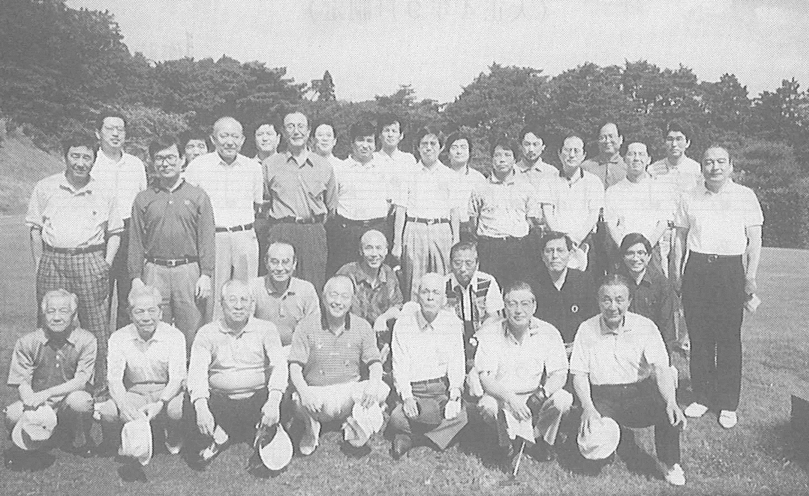
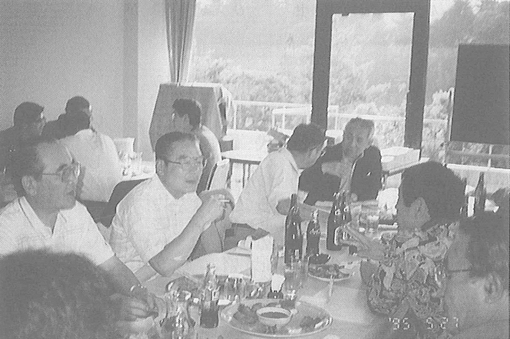

年代を超えた交流―恒常化へ組織づくりに動く
去る5月27日、快晴・微風の絶好のゴルフ日和のもと、33名（うち高中関係9名）の参加を得て、新緑映える鶴ケ島カントリークラブ（埼玉県）において、東京玉翠会のゴルフコンペが開催された。過去に幹事有志によるコンペは開かれたこと あったが、総会担当幹事が中心になって会員に広く呼び掛けてのコンペは昨年初めて開催され、今回は2回目である。
参加者の最年長は昭和6年卒の松本俊英さん、最年少は53年卒の岡本尚佳さん、文字どおり年代・世代を超えて、和気あいあいプレーを楽しんだ。松本さんは、年齢を感じさせない素晴らしいショットを繰り出し、周囲の感嘆を誘っていた。
コンペはペリア方式で行われ、38年卒の前田勇さんが栄えある優勝に輝いた。前田さんには宮井東京玉翠会会長の寄贈になる優勝杯が贈られた。
また、20年卒の中村文俊さん、34年卒の三崎屋さんから賞品の提供もあり、請先輩のご好意に幹事一同感謝することしきりであった。
コンペ後の懇親会では、楽しいゴルフ談議に、思い出話にと花が咲いた。今年は女性の参加がなかったのは寂しいとの声も聞かれた。
また、今後のコンペのおり方も話題にのぼり、恒常的なものとして続けていこうとの声が相次ぎ、東京玉翠会の中の同好会的なものとして、代表者も決め、組織も整備しようとの提案もなされた。
そのようなことを踏まえて、今後有志で組織のおり方を詰め、次回は今秋にも開催しようということになった。また、総会担当幹事から、女性も含めて交流の輪を更に広げるために、7月1日の総会会場に、同好会参加希望者の「登録申込みコーナー」を設けたいとの意向が表明された。
最後に、23年卒で野球部ＯＢでもある丸吉幸也さんの一本締めで、再会を期し、楽しいコンペの幕が閉じられた。
（46年卒幹事記す）

H7.5.27 於 鶴ヶ島カントリークラブ

コンペ後の懇親会